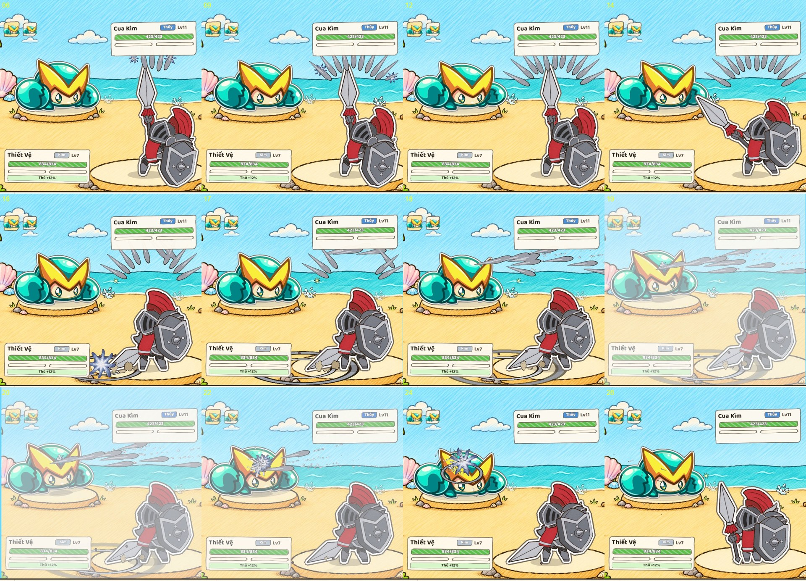
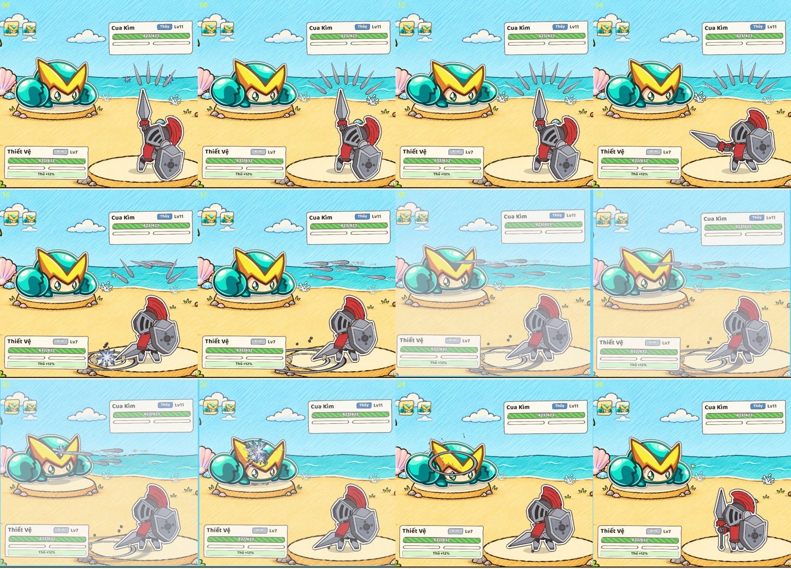
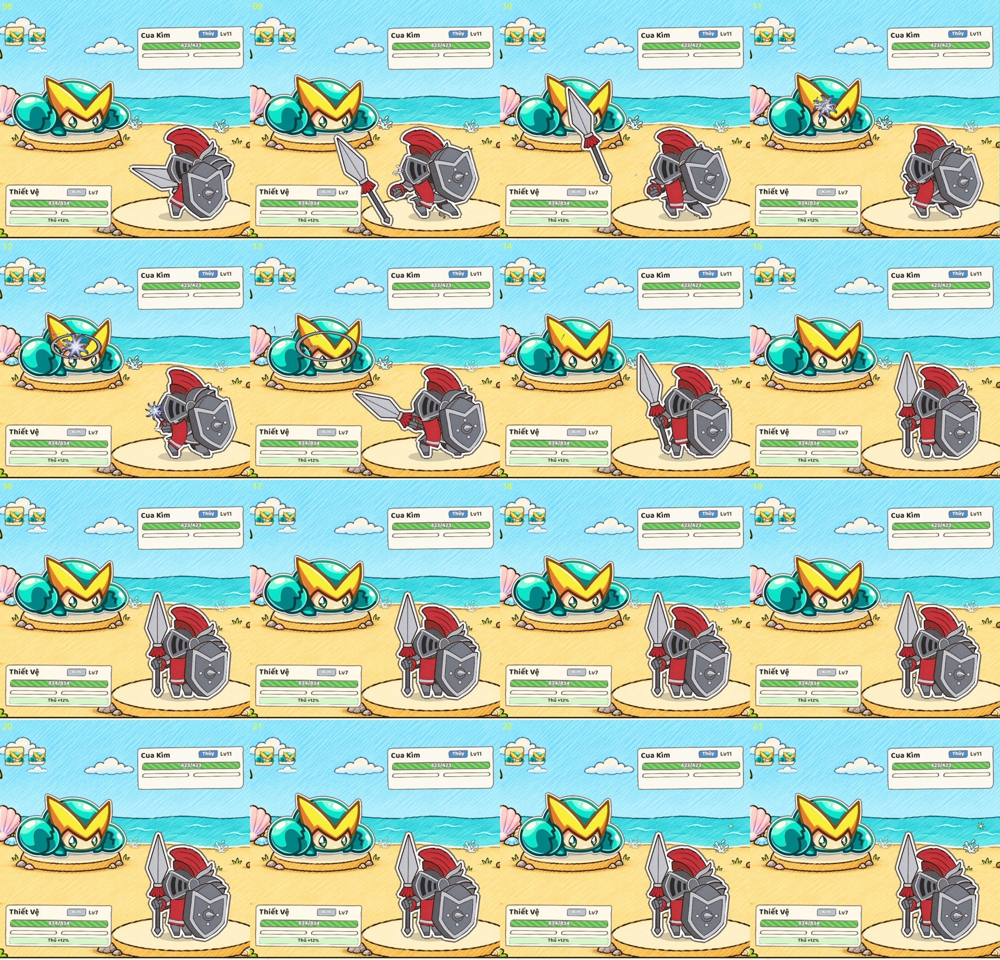
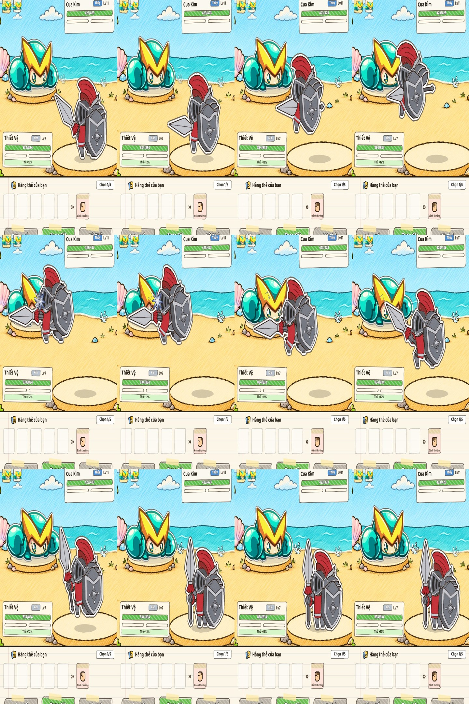

Thiết Vệ (suất doc_giac, tướng 2 đảo Kim) soi trong trận thật
Dạng 2: chiêu cuối (kim sắt xoè quạt trên đầu, dậm giáo, kim găm)

Dạng 1: chiêu cuối (7 kim)

Dạng 2: chiêu mana (ném giáo, giáo găm, giáo mọc lại)

Dạng 2: đánh thường (lao tới đâm)
